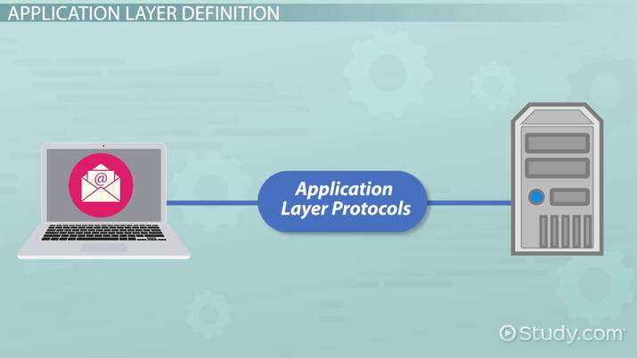

Application layer video Application Layer Protocols The application layer sits at the top of the OSI model. It functions as a helper of somesorts in HTTP: Hypertext Transfer Protocol which it ensures that an application can communicate with other applications on different A set of rules that computers use to transfer files such as text, images, sound, video and other computers, systems and networks. While the name may make you assume so. It is not an forms of media. How it works is that resources are exchanged between the client devices and application itself. Instead it is a component in applications that control the communication the servers. The devices send requests for resources necessary for the web page, the servers method to other devices. then send the information back from the request.  FTP: File Transfer Protocol FTP allows individuals and businesses to share files without being in the same place. They send information through a FTP client such as FileZilla and FTP Voyager or through the cloud. It relies on two communication channels between the client and server, a command channel for controlling a conversation and a data channel for transmitting file content DNS: Domain Name System It is a naming database that locates and translates domain names into Internet Protocol (IP) addresses. For example if someone were to type “tritechsc.org” in a web browser, a server would take that domain name and mark it to a certain IP address. Something similar to the structure of 203.0.113.72. SNMP Simple Network Management Protocol SNMP is a protocol for monitoring and managing network devices on a LAN or WAN scale. Its purpose is to provide network devices, such as routers, servers and printers with an understandable language that they can use to share information within the Network Management System (NMS). The SNMP client has 3 components. The SNMP agent, which acts as a server. The SNMP manager, which acts as the client and a management information base (MIB), which acts as the servers database. The manager asks the agent a question, the client then gets the MIB to supply the answer.